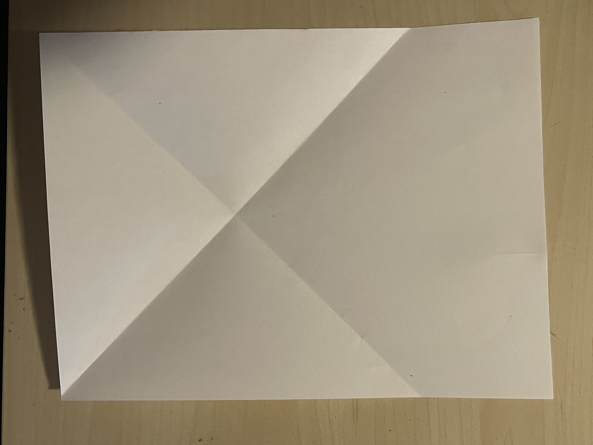
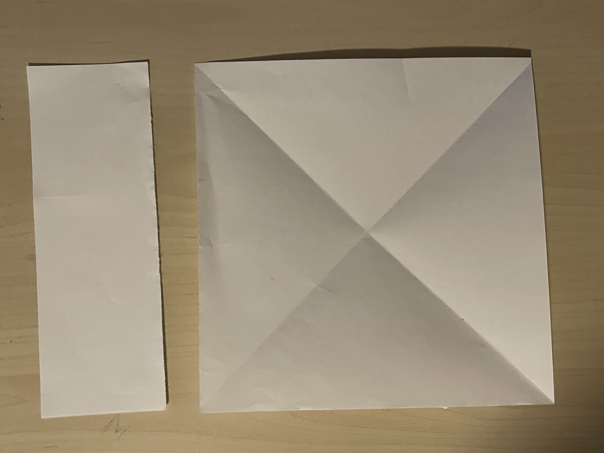

ORIGAMI HUB



How to make a square
- Take the top left corner of any size of paper, and fold it down all the way to the right edge of the page.
- Crease the edge, then unfold it.
- Do the same but with the right corner and left edge this time. Crease and unfold.
- Where the two folds end, fold the bottom of the page up. Crease and fold.
You have two options here, either tear along the bottom fold you made very carefully, or you can use scissors to cut across.
Voila! You should now have a square sheet of paper.